Purring is a common behavior in cats that can indicate various emotions. Cats often purr when they're content, but they may also purr when they're anxious, in pain, or seeking attention. Mother cats also purr to communicate with their kittens.
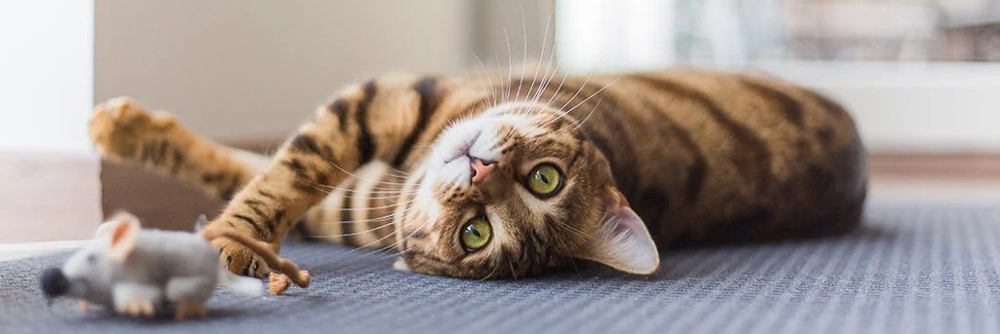
Understanding Cat Behavior
Cats exhibit a range of behaviors that can be intriguing and sometimes confusing to their human companions. Understanding these behaviors can help strengthen the bond between you and your feline friend.
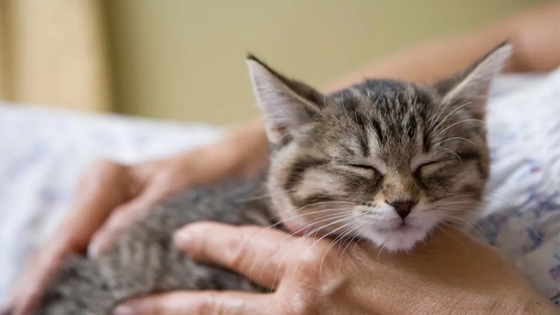
Purring
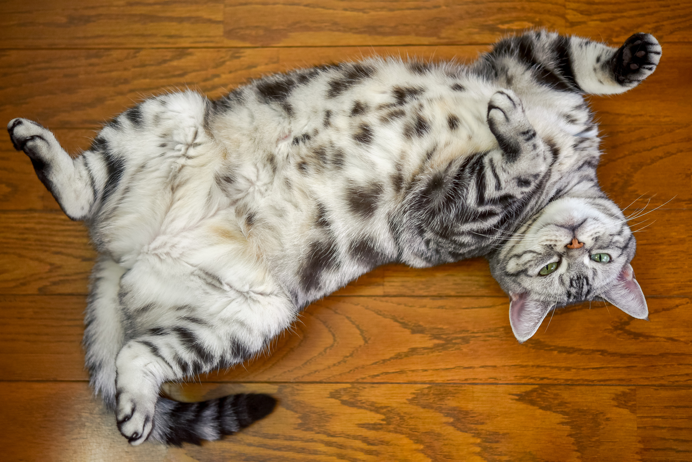
Showing its belly
When a cat shows its belly, it's often interpreted as a sign of trust. However, this behavior can be complex. Cats may expose their bellies as a defensive posture or to regulate body temperature. Not all cats enjoy belly rubs, so it's important to understand your cat's body language.
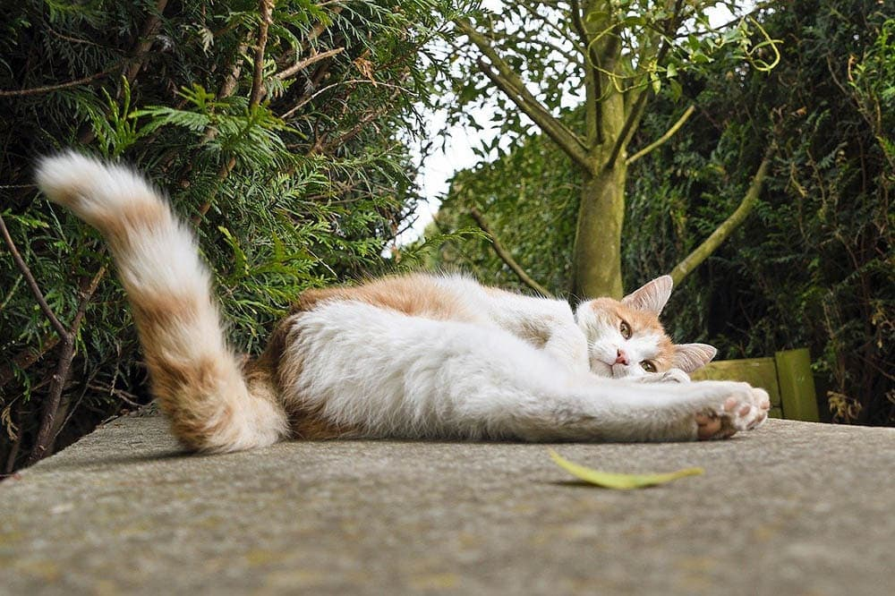
Wagging its tail
Unlike dogs, a cat's tail wagging doesn't always indicate happiness. A cat may wag its tail when it's agitated, excited, or about to pounce. Understanding the context and other body language cues can help interpret a cat's tail movements.
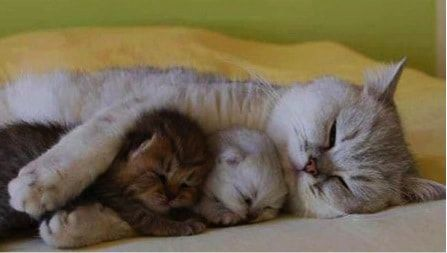
Napping
Cats are crepuscular, meaning they're most active during dawn and dusk. They sleep for long periods throughout the day to conserve energy. Napping also helps cats stay alert during their active periods when they hunt and explore their environment.
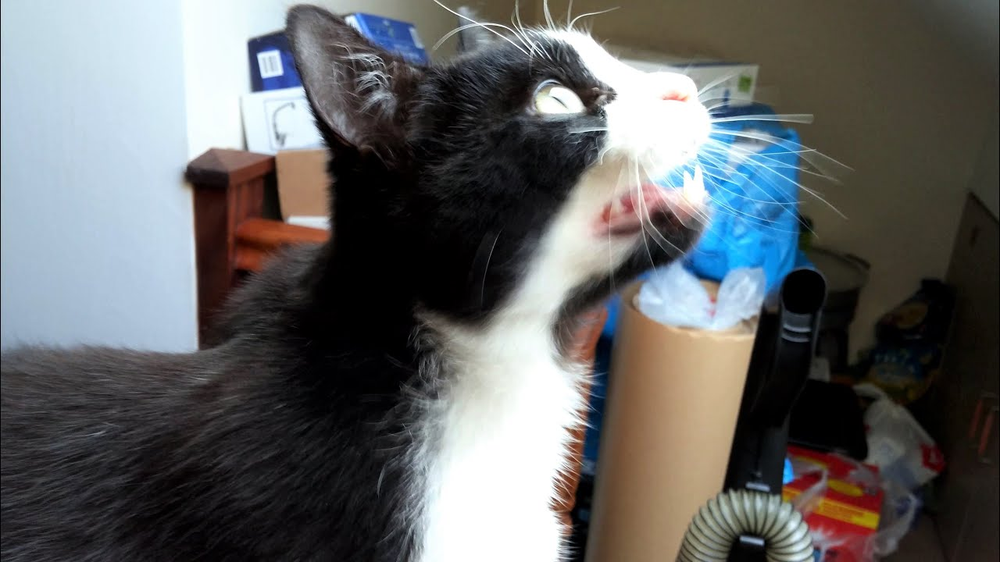
Chirping
Chirping is a vocalization that cats use in various situations. They may chirp when they're excited, hunting, or trying to get attention. Some cats chirp at birds or insects they see through a window, displaying their natural hunting instincts.
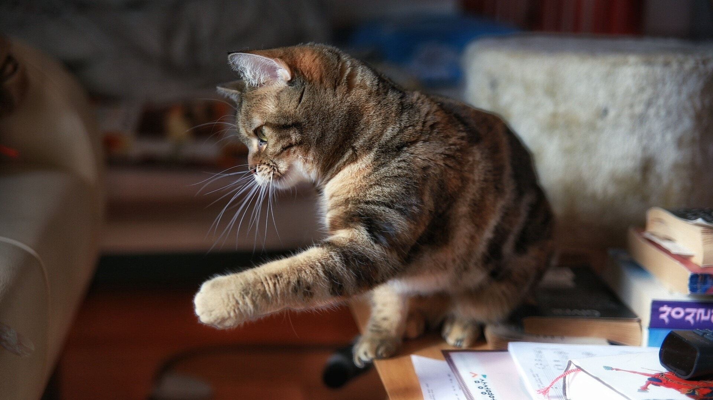
Knocking things over
Knocking things over is a behavior that many cat owners find puzzling. Cats are curious creatures and use their paws to explore their environment. They may knock objects over out of curiosity, playfulness, or to get your attention.
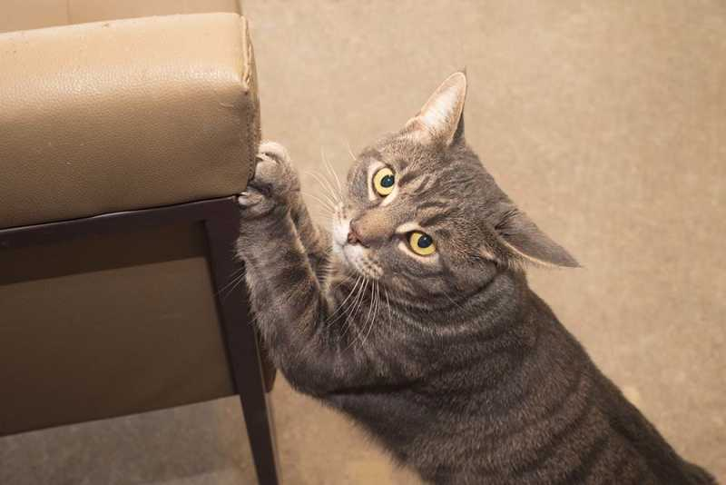
Scratching furniture
Scratching is a natural behavior in cats that helps them maintain their claws, mark their territory, and stretch their muscles. Cats have scent glands in their paws, so scratching also leaves a scent marker. Providing appropriate scratching posts can help redirect this behavior.
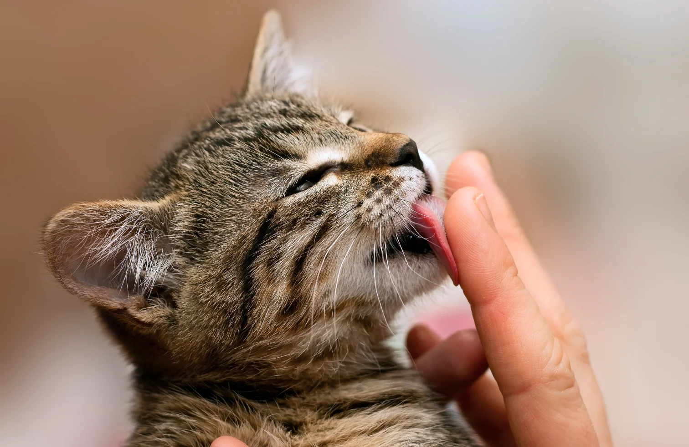
Licking you
Licking is a behavior that cats use to groom themselves and bond with others. When a cat licks you, it's a sign of affection and trust. It's also a behavior that cats learn from their mothers, as mother cats groom their kittens from a young age.
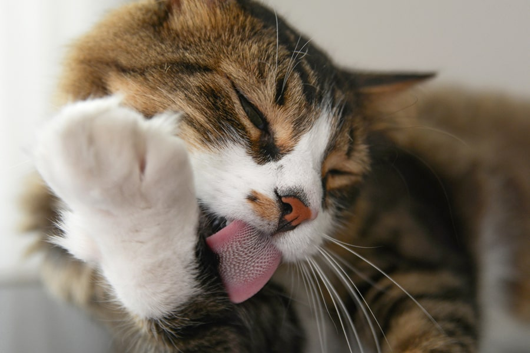
Licking itself
Cats are meticulous groomers and spend a significant amount of time grooming themselves. Grooming helps cats keep their fur clean, remove loose fur, and regulate body temperature. It's also a soothing behavior that helps cats relax and relieve stress.
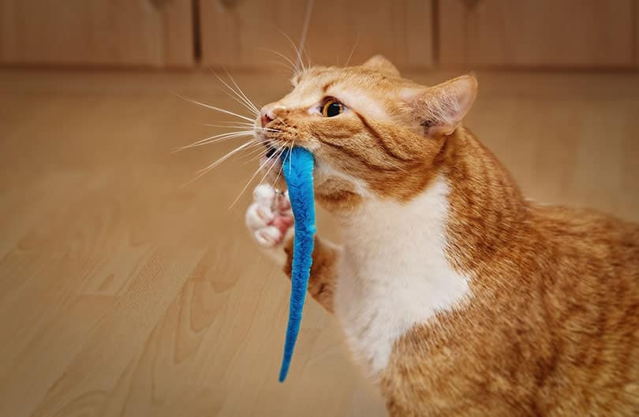
Bringing dead animals or toys
Bringing you "gifts" is a behavior that stems from a cat's hunting instincts. Cats are natural hunters, and bringing you a dead animal or toy is a way for them to show their hunting prowess and provide for their "family." While this behavior may seem unpleasant to humans, it's a sign of affection from your cat.
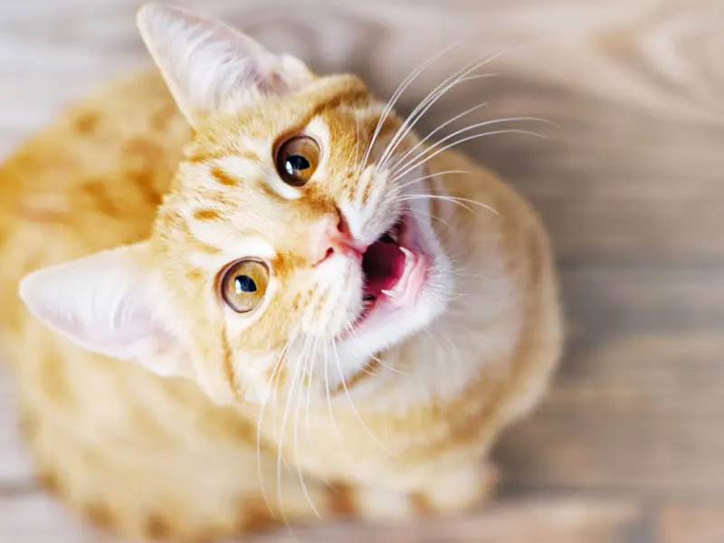
Meowing
Cats use meows to communicate with humans. Each cat has its own set of meows with different meanings. Cats may meow to greet you, ask for food, express discomfort, or seek attention. Understanding your cat's meows can help you better meet its needs.